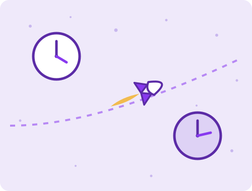

Starship Clock
Go fast enough and the trip gets shorter for you but not for anyone watching. Pick a destination, design a ship, and compare the two clocks.

Proxima Centauri 4.25 light years away
Ship — two ways to make the trip
constant velocity · one speed the whole way
your clock runs slow by a factor of 1.02
constant acceleration · flip at the midpoint
top speed 94.9% of c
Every destination, on one time axis
How this works: the cruise numbers come straight from the Lorentz factor. The constant-acceleration numbers come from the relativistic rocket, burning at a fixed proper acceleration to the midpoint, flipping, and decelerating in, so you arrive at rest rather than tearing past. Proper acceleration is what the crew feels underfoot, which is why one g is the comfortable setting. The time axis is logarithmic, because the numbers on it span eight decades. On the map, the two coloured markers are your own clock under each plan and the grey one is Earth's clock for the accelerating trip. Grey can land to the left of your constant-velocity marker, which is not an error: a fast trip can be over on Earth before a slow ship has even arrived.
Why speed alone does not save you
Set the constant velocity dial to twenty percent of light speed and look at what it buys. Proxima Centauri takes about twenty one years of Earth time, and your own clock reads about twenty and a half years. You saved a few months. Time dilation is real at that speed, but it is a two percent effect, and no amount of patience turns it into anything better.
The reason is the shape of the Lorentz factor. It sits near one for most of the range and only climbs steeply once you are already close to light speed. At half of c your clock runs about fifteen percent slow. At ninety percent it is a factor of two. At ninety nine percent it is seven, and at that point the trip to Proxima takes you seven months. Every useful thing dilation does for a traveller happens in the last sliver of the dial.
Why constant acceleration changes the problem
The second dial does something different. Instead of picking a speed you pick an acceleration and never stop, so you spend the whole trip climbing into the part of the curve where dilation actually bites. One g is a natural setting because it feels like standing on Earth, and it happens to be worth roughly one light year per year of ship time once you are up to speed.
Push the map out to the far destinations and the two clocks come apart completely. The galactic centre is twenty six thousand light years away, and under one g you would get there in about twenty years of your own life. Andromeda is two and a half million light years away, and you would arrive after about twenty eight years aboard. Nothing you left behind survives either trip. The ship clock stays human while the Earth clock runs to geological time, and the gap is not a trick of the drive, it is what the geometry does.
What this page is cheating at
Fuel. All of it. This page takes acceleration as a given and never asks where the energy comes from, which is exactly the thing that makes interstellar travel hard rather than merely far. Rocket Lab is the honest counterweight: the rocket equation charges you a logarithmic tax for every extra unit of velocity, and holding one g for years is far outside what any propulsion we have could pay for. A real ship also has to survive dust at those speeds, where a grain of sand carries the energy of a bomb, and has to navigate toward where a star will be rather than where it is now.
The distances here are current values and the stars are moving. Barnard's Star in particular is closing on us and will be almost a light year nearer in ten thousand years, which barely matters for a trip you would make tomorrow and matters a great deal for one you would make at constant velocity.